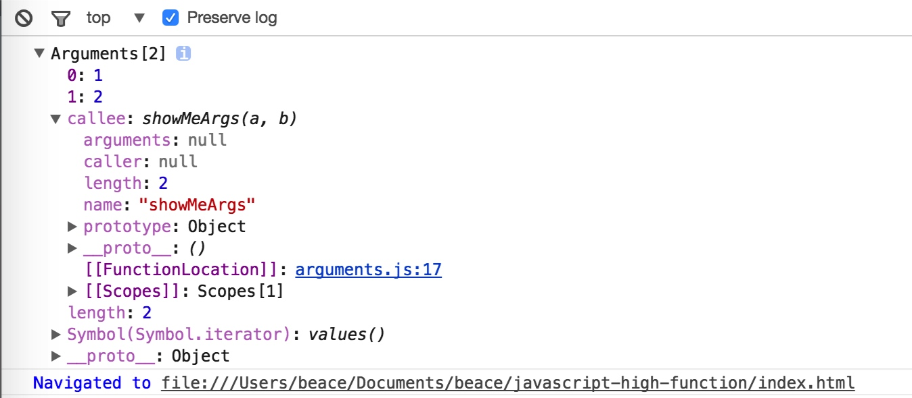

上一次说到了JavaScript中加引号和不加引号的区别，已经认知到了在大体上还是没有区别的。这里我将深入的了解JavaScript函数中的arguments对象，将其运用到实战。
目录
正文
首先，回顾一下上一次的代码。
function getArgs(a, b) {
console.log(arguments[0])
console.log(arguments[1])
console.log(arguments['0'])
console.log(arguments['1'])
}
getArgs(1, 2);
var b = {"b": "b"};
var b2 = {b: "b"};
console.log(b.b);
console.log(JSON.stringify(b))
console.log(JSON.stringify(b2))
在这里，我们可以看到其实访问都没有错误。都会返回我们想要的结果。唯一的区别是有引号和没有引号的区别。我们知道JavaScript中表示字符串的时候双引号和单引号是没有区别的（字符串拼接除外），编译器都可以识别。例如上述代码运行时不会出错的。
但是，如果我们想获取getArgs()中参数的个数，可以写成这样吗？
function getArgs(a, b) {
console.log(arguments.length)
}
答案是肯定的。但arguments仍然不是一个数组，它是一个只具备length属性的对象。
function getArgs(a, b) {
console.log(typeof arguments); // object
}
可以看出，arguments是object类型的，只有array类型才具有length属性。那为何可以像数组那样访问呢？
在这里，先打住。我们来看下array是如何获取元素的。
const arr = [1,2,3,4];
for (let i = 0; i < arr.length; i ++) {
console.log(a[i]); //1 2 3 4
}
上述代码迭代了arr数组，并且我们通过Array[index]的方式进行数组元素的获取。试想一下，如果给index加上引号呢？还能如期获取吗？
//将 console.log(a[i]) 替换
console.log(a[i.toString()]) //1 2 3 4
可以看到，数组如约输出。不信你可以尝试a['0']的方式去访问，依然可以获得元素。
这是为什么呢？
首先，我们来查看下Array在JavaScript中定义的类型。
typeof Array //object
可以看到，Array是object类型。尽管我们没有必要这样加引号的去访问，但是事实上是可以这样的。因为a[0]中的整型0被JavaScript强制地隐式转换（toString()）为字符串'0'。如果你不相信，Mozilla MDN上有一个非常好的例子来说明这一点 （https://developer.mozilla.org/en-US/docs/Web/JavaScript/Reference/Global_Objects/Array） 。比如：
我们声明一个数组，并且像如下访问。
var arr = [1,2,3,4,5];
console.log(arr[01] === arr[1]); // true
//这里 arr['01'] === undefined
console.log(arr['01'] === arr['1']) // false
我们知道，在整数的高位补0，十进制里还等于其本身。
01 === 1 // true
而数字作为字符串比较，当然就不同。
'01' === '1' //false
The 2 in years[2] is coerced into a string by the JavaScript engine through an implicit toString conversion. It is for this reason that '2' and '02' would refer to two different slots on the years object and the following example could be true. —— by Mozilla MDN JavaScript Array
这下你应当知道，原来JavaScript也是通过”强制补引号“的方式进行数组索引的处理。那就不难理解为何arguments也可以这样了。容易进入误区的是arguments[0]这样的访问方式容易让人觉得他就是个数组。对于引号没有研究透彻的JavaScript开发者来说，是很大一个误区。
Arguments
现在正式进入arguments的正题。话说既然arguments是个对象，那它里面有什么呢？

这里打印了showMeArgs(1, 2)中的arguments对象。有如下属性
| 属性 | 值 | 含义 |
|---|---|---|
| 0 | 1 | function中的第一个参数 |
| 1 | 2 | function中的第二个参数 |
| callee | showMeArgs(a, b) | 当前执行的函数 |
| length | 2 | 内置属性，获取参数个数 |
| iterator | array | 返回一个新的Array Iterator对象，该对象包含参数中每个索引的值 |
arguments中的参数
上面图表中的0,1，即对应形参的a,b。
特点
- 可以通过arguments[0]的方式获取或设置属性，设置属性时，会覆盖实参
function showMeArgs(a, b) {
arguments[0] = 10;
console.log(arguments[0]); //10
console.log(a + b);
}
showMeArgs(1, 2); //12
- 当默认参数提供时，实参不会被覆盖
function showMeArgs(a = 1, b) {
arguments[0] = 100;
console.log(a + b);
}
showMeArgs(10, 3) // 13
- ES6 当使用省略参数（rest parameters）的写法时，arugments也可以返回
function showMeArgs(...args) {
console.log(arguments);
}
showMeArgs(1, 2, 3); // object
arguments中的arguments.callee属性
包含当前执行的功能。这句话可能有些别扭。通俗一点来说，它可以指代该函数函数体内当前执行的函数。
语言描述可能不太准确，在这里可以看一个例子。
如果有一个数组，这个数组我希望能够求出每个元素从0加到该元素的和并返回。可以这样来实现。
- 先把求和这个动作抽象出来。
function plus(n) {
return n === 0 ? 0 : plus(n - 1) + n;
}
- 接着迭代数组加求和
[0,1,2,3,4,5,6].map(n => plus(n)) //[0, 1, 3, 6, 10, 15, 21]
可以看到，我们通过调用plus()实现了。如果我们觉得业务逻辑比较简单，为了代码简洁，想要把抽象出来的东西放在map方法中。
[0,1,2,3,4,5,6].map(n => n === 0 ? 0 : (n - 1) + n); // [0, 1, 3, 5, 7, 9, 11]
可以看到并没有按照想要的结果去求和，反而直接计算了。这时我们可以使用callee方法代表一个匿名函数来解决这一问题。
[0,1,2,3,4,5,6].map(function(n){
return n === 0 ? 0 : arguments.callee(n - 1) + n
});
这个时候，我们就不能够使用ES6箭头函数的新特性了。因为arguments为undefined。
Uncaught ReferenceError: arguments is not defined
相比之下，其实这种递归调动以及内联函数的写法很不友好。我们无法抽象出想要的方法，并且无法进行进一步的优化。在高阶函数中，经常很多函数作为另一个函数的参数进行传递，这样的写法难以维护。如果大量使用，甚至可能造成性能上的问题，例如不可避免的嵌套的匿名回调函数（callback function）等。将来的可能被废弃掉。
arguments个数
通过arguments.length可以获取函数中参数的个数。但其不是数组
function getArgs(a, b) {
console.log(arguments.length) //2
}
arguments@@iterator
Array的迭代器。类似Array.prototype.value的使用，现在除Firefox Nightly版本能够体验外，各大浏览器均不支持。例如：
var arr = ['w', 'y', 'k', 'o', 'p'];
var iterator = arr.values();
for (let letter of iterator) {
console.log(letter);
}
arguments(object) to array
通过上面的所有表述，我们已经知道arguments已经是一个object类型。那可以通过一定方式将arguments的类型转换为array吗？
可能似乎没有这样的需求。我来介绍一个例子。
以下灵感来自 https://t.75team.com/video/ JavaScript视频
比如，你的一个同事或者合作的伙伴写了一个改变元素颜色的函数，如下。
function setColor(color, ele) {
ele.style.color = color;
}
这个函数看起来没有什么特别，唯一让人看起来别扭的可能是参数的位置。我们可能习惯第一个形参为元素（ele），第二个形参为颜色（color），因此我们可以实现一个方法将参数内容转置， 这里就用到了arguments。
function setColorReverse(fn) {
return function(color, ele) {
var args = Array.prototype.slice.call(arguments);
fn.apply(this, args.reverse());
}
}
setColorReverse(setColor('container', 'blue'));
同样，除了像Array.prototype.slice.call(arguments)这样的处理之外，还可以替换为：
[].slice.call(arguments) || Array.from(arguments)
在ES6中，这样写更简单。
function reverseArgs(fn) {
return function(...args) {
fn.apply(null, [...args].reverse());
}
}
reverseArgs(setColor)(content, 'blue'); // so the color of content is blue